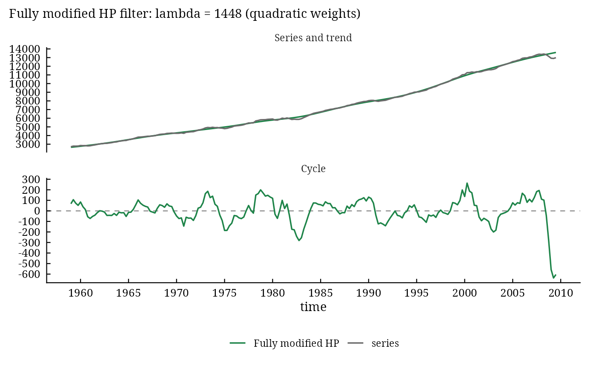

fmhp_filter() applies the fully modified HP (FMHP) filter of Hanif, Iqbal and Choudhary (2017). It removes
the two weaknesses of the HP filter at once: the smoothing parameter is chosen from the data (as in the modified
HP filter of McDermott 1997), and the end-point bias is reduced by raising the smoothing parameter at the first
and last \(k\) observations, with weights chosen to minimise the loss of Bloechl (2014), the distance of the
gain of every estimate from the gain at the centre of the series.
Usage
fmhp_filter(
x,
max_lambda = 3000L,
k_linear = 15L,
k_quadratic = NULL,
alpha_linear = seq(0, 2000, 10),
alpha_quadratic = seq(0, 2000, 5),
schemes = c("linear", "quadratic"),
form = c("rows", "differences"),
lambda = NULL,
log_scale = TRUE,
as_dt = TRUE
)
# Default S3 method
fmhp_filter(
x,
max_lambda = 3000L,
k_linear = 15L,
k_quadratic = NULL,
alpha_linear = seq(0, 2000, 10),
alpha_quadratic = seq(0, 2000, 5),
schemes = c("linear", "quadratic"),
form = c("rows", "differences"),
lambda = NULL,
log_scale = TRUE,
as_dt = TRUE
)Arguments
- x
a numeric vector or a
tsobject, without missing values; at least 5 observations.- max_lambda
the largest \(\lambda\) of the searches over \(1, 2, \dots,\)
max_lambda(default 3000, as in the published code).- k_linear
number of end values with linear weights (default 15).
- k_quadratic
number of end values with quadratic weights (default
NULL: \(\mathrm{round}(\min(22, T/2 - 5))\)).- alpha_linear, alpha_quadratic
the grids of the weight \(\alpha\) (defaults
seq(0, 2000, 10)andseq(0, 2000, 5)).- schemes
the schemes compared:
c("linear", "quadratic")(default) or one of them.- form
"rows"(default, the published code) or"differences"; see Details.- lambda
NULL(default: chosen from the data) or a fixed smoothing parameter.- log_scale
filter the logarithm of the series (default
TRUE, as in the published code).- as_dt
TRUE(default) returns adata.table;FALSEa list.
Value
With as_dt = TRUE, a data.table with the columns original, trend,
cycle (and time for a ts) and the attributes lambda, gcv, lambda_mhp,
scheme, alpha, k, loss and lambda_t. With as_dt = FALSE, a list of
class c("mhp_fmhp", "mhp", "mhp_result", "list"):
original,trend,cyclethe series, its trend and its cycle (on the scale of the series).
lambda,gcv\(\lambda^{\mathrm{FMHP}}\) and its criterion.
lambda_mhp\(\lambda^{\mathrm{MHP}}\) of step 1.
scheme,alpha,kthe chosen scheme, its weight and its number of end values.
lossthe total loss \(L\) of the chosen scheme at \(\lambda^{\mathrm{MHP}}\) (the criterion of step 4).
lambda_tthe smoothing parameters of the trend.
schemesdata.table, one row per scheme:scheme,k,alpha,loss,lambda,gcv.form,log_scalethe settings; then
trend_log,cycle_log(withlog_scale = TRUE),timeandfrequency(for ats).
Methods: print(), plot(), ggplot2::autoplot(), hp_loss(),
mhp_interpret().
Details
Gain and loss. Row \(t\) of the smoother \(\mathbf{B}\) holds the weights of
\(\hat{g}_t\); its gain at frequency \(\omega\) is
$$P_t(\omega) = \left|\sum_{j=1}^{T} b_{tj}\,e^{i\omega(j - t)}\right|$$
(Hanif et al. 2017, eq. 6), and the loss of the estimate is \(l(t) = \theta\sum_{\omega}[P_c(\omega) -
P_t(\omega)]^2\) over \(\omega = 0, 0.1, \dots,
3.1\) with \(\theta = 0.1\) and \(c\) the centre of the series
(eq. 7); the total loss is \(L = \sum_t l(t)\) (eq. 8). See hp_loss().
End-point weights. The smoothing parameter of observation \(t\) is \(\lambda_t = \lambda\) in the middle and \(\lambda + \alpha j^{i}\) for the \(j\)-th observation from
the middle among the last (and the first) \(k\), \(j = 1, \dots, k\), linear
(\(i = 1\)) or quadratic (\(i = 2\)) (eqs. 9a and 9b). See hp_schedule().
The procedure (Section 5 of the paper):
\(\lambda^{\mathrm{MHP}}\) of the modified HP filter (
mhp_filter()), searched over \(1, \dots,\)max_lambda;for each scheme (linear and quadratic), the weight \(\alpha\) of the grid that minimises the total loss \(L\) at \(\lambda^{\mathrm{MHP}}\);
with that weight, \(\lambda^{\mathrm{FMHP}}\) minimising McDermott's criterion again;
the scheme whose loss in step 2 is smaller gives the trend and the cycle.
The defaults are those of the published MATLAB code (Hanif 2017): max_lambda = 3000; linear weights on
\(k = 15\) end values with \(\alpha \in \{0, 10, \dots, 2000\}\);
quadratic weights on \(k = \mathrm{round}(\min(22, T/2 - 5))\) end values with
\(\alpha \in \{0, 5, \dots, 2000\}\); logarithms of the series. The working paper
states \(k = 20\) in the text; set k_linear and k_quadratic to use it.
Form of the weights. The published code multiplies row \(t\) of \(\mathbf{A}\) by
\(\lambda_t\), \(\hat{\mathbf{g}} = (\mathbf{I} + \mathrm{diag}(\lambda_t)\mathbf{A})^{-1}
\mathbf{x}\) (form = "rows", the default). The penalised least-squares
problem with a separate \(\lambda_r\) for each second difference gives instead \(\hat{\mathbf{g}} =
(\mathbf{I} + \mathbf{K}^\top\mathrm{diag}(\lambda_r)\mathbf{K})^{-1}\mathbf{x}\), a symmetric smoother (form = "differences", the scheme of eq. 9 written on the
\(T - 2\) differences). Both are solved in \(O(T)\) operations; the gains need two solves per
frequency and the smoother itself is never formed.
With lambda given, the smoothing parameter is fixed (steps 1 and 3 are skipped): the HP filter with the
endogenous weights of the paper (Table 3a, column "HP (our scheme)").
References
Hanif, M. N., Iqbal, J. and Choudhary, M. A. (2017). Fully modified HP filter. SBP Working Paper Series, No. 88, State Bank of Pakistan.
Hanif, M. N. (2017). Fully modified HP filter function (MATLAB code). MATLAB Central File Exchange, 63198.
Bloechl, A. (2014). Reducing the excess variability of the Hodrick-Prescott filter by flexible penalization. Discussion Paper 2014-1, University of Munich.
McDermott, C. J. (1997). An automatic method for choosing the smoothing parameter in the HP filter. Unpublished, International Monetary Fund, Washington DC.
Author
Muhammad Yaseen (myaseen208@gmail.com), from the MATLAB code of Muhammad Nadim Hanif
Examples
data(us_macro)
gdp <- ts(data = us_macro$gdp, start = c(1959, 1), frequency = 4)
fm <-
fmhp_filter(
x = gdp
, max_lambda = 3000
, k_linear = 15
, k_quadratic = NULL
, alpha_linear = seq(from = 0, to = 2000, by = 10)
, alpha_quadratic = seq(from = 0, to = 2000, by = 5)
, schemes = c("linear", "quadratic")
, form = "rows"
, lambda = NULL
, log_scale = TRUE
, as_dt = FALSE
)
fm
#> Fully modified HP Filter Result
#> ==============================
#> Observations: 203
#> Fully modified lambda: 1448 (modified HP lambda: 683 )
#> End-point weights: quadratic, alpha = 15 on 22 end values; loss = 0.6163
#> GCV: 3.336e-04
#> Filtered on the log scale; cycle = series - trend in levels
#>
#> Cycle Statistics:
#> Mean: -2.603
#> SD: 120.4
#> AR1: 0.9522
#> Range: 900
#>
#> Sources: Hanif et al. (2017); Hanif (2017); Bloechl (2014); McDermott (1997);
#> Hodrick and Prescott (1997). Full references: mhp_cite(x).
fm$schemes
#> scheme k alpha loss lambda gcv
#> <char> <int> <num> <num> <int> <num>
#> 1: linear 15 240 0.8548936 1169 0.0003168500
#> 2: quadratic 22 15 0.6163442 1448 0.0003335623
plot(x = fm)
